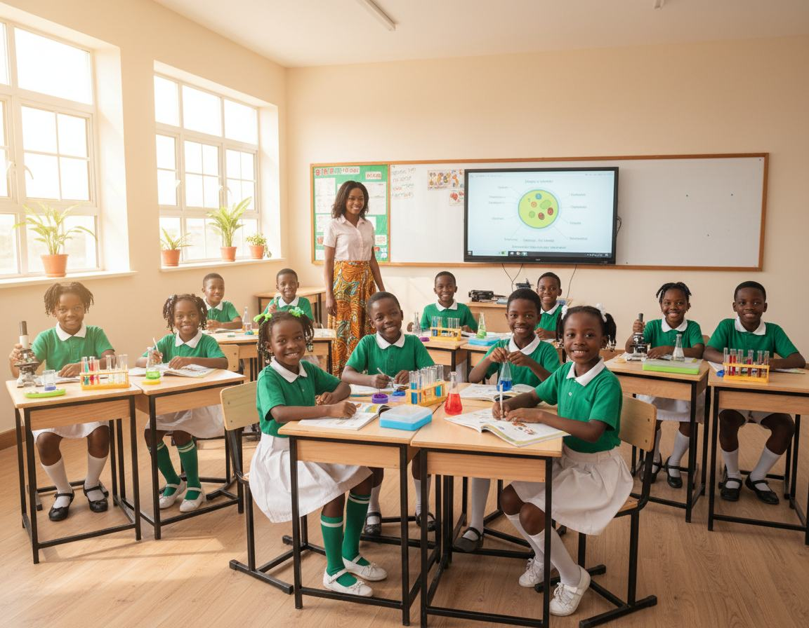
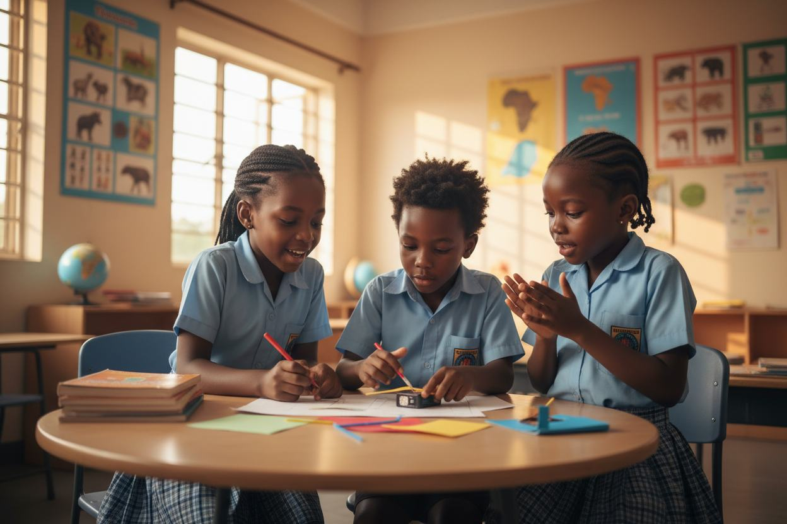
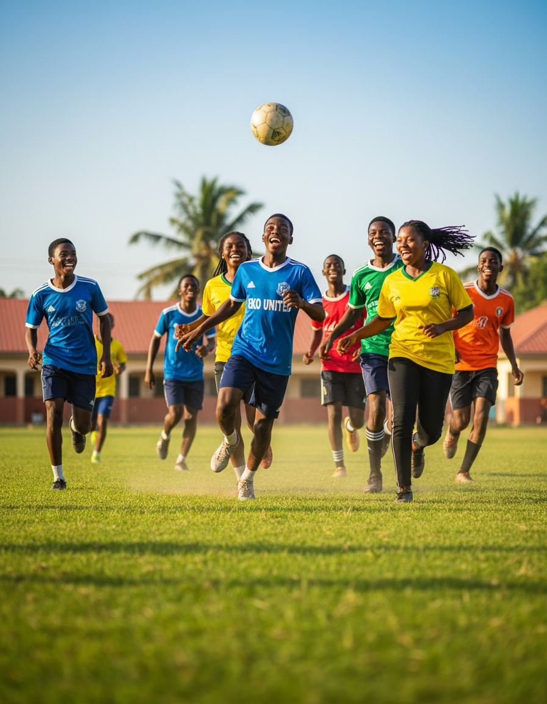
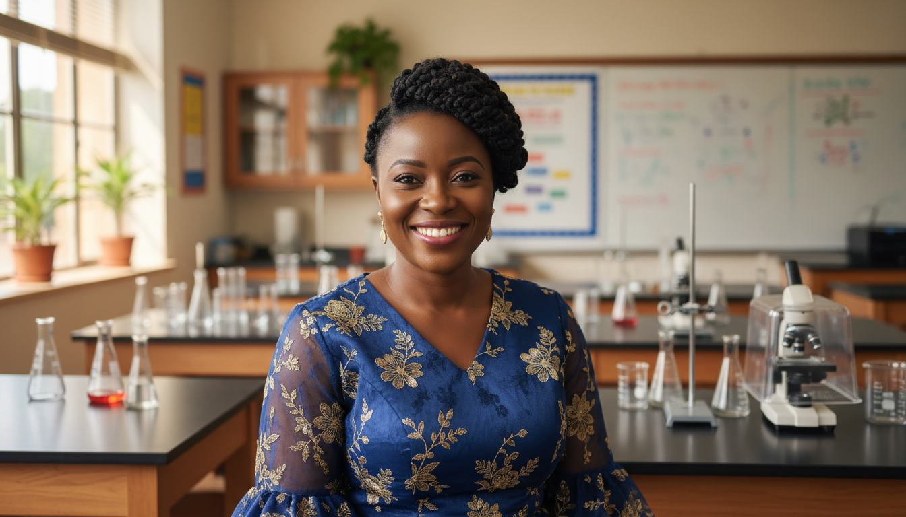
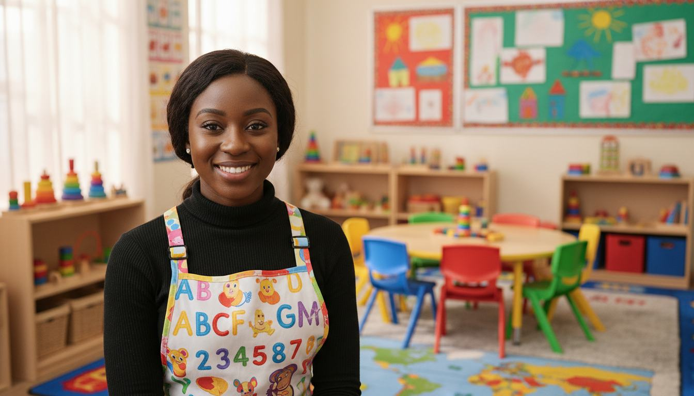

A Curriculum Built for the Future
Nurturing character, building leadership, and preparing students from nursery to SSS3 to excel on the global stage. Discover our dual-curriculum advantage.

Character first, success will follow
We believe true education goes far beyond exams. We are dedicated to nurturing resilient, empathetic, and intellectually curious young leaders.
Our approach blends academic rigor with moral grounding. At Seeds of Knowledge Intl School, we follow a values-driven model that integrates character development directly into the curriculum. We don't just teach children how to pass tests; we teach them how to navigate life with integrity, empathy, and courage.
By maintaining small class sizes and a high teacher-to-student ratio, we ensure that every single child gets the personalized attention, coaching, and intellectual scaffolding they need to thrive from early years to secondary graduation.

A journey designed for every stage of growth
From first steps to high school graduation, our structured levels prepare students for WAEC, NECO, and international tertiary study.
Nursery & Early Years
A warm, play-based environment focused on early literacy (phonics), fundamental numeracy, motor skills, social skills, and creative expression.
Explore Nursery →Primary School
A powerful Nigerian & British blended curriculum focusing on core reading, advanced math, scientific inquiry, digital literacy, and civic values.
Explore Primary →Secondary School
Rigorous WAEC/NECO preparation balanced with technology tracks, analytical writing, leadership camps, and dedicated career guidance.
Explore Secondary →Broad subject mastery, specialized focus
Our curriculum integrates standard national education requirements with robust global methodologies to spark intellectual growth.
Mathematics & Sciences
Rigorous arithmetic, geometry, biology, chemistry, and physics tracks emphasizing experimental methods.
English & Languages
Blended study of creative writing, classical literature, and international languages like French.
Social Studies & Humanities
Fostering citizenship through history, geography, social studies, and contemporary global affairs.
Creative Arts & Music
Hands-on paint, pottery, dramatic performance, and choral programs to unleash artistic vision.
Physical Education & Sports
Structured track events, football, basketball, and physical fitness programs supporting physical well-being.
Technology & Computing
Foundational coding, digital research, algorithms, and practical software training starting in primary.
Developing leadership, talent, and life skills
Learning doesn't end at the classroom door. Our expansive extracurricular roster lets students explore their unique passions.
Competitive Sports Teams
Football, basketball, and track clubs competing in regional tourneys.
Debate & Public Speaking Council
Sharpening arguments, speech structure, and national debating skillsets.
Creative & Performing Arts Guild
Choral training, classical instrument study, and end-of-year stage plays.
Community Service & Civic Clubs
Volunteering, community clean-ups, and building high-empathy leadership.


World-class spaces for practical learning
We continuously invest in top-tier resources to transform theoretical knowledge into real, practical understanding.

Modern Science Labs
Fully-equipped, safe biology, chemistry, and physics practical labs supporting rigorous testing and early research development.

Well-Stocked Library
A spacious, peaceful reading sanctuary holding over 10,000 physical volumes alongside computer portals for digital research.
Computer Labs
Equipped with modern high-speed workstations to support computational coding, digital media, research, and technical software skills.
Passionate mentors, subject-matter experts
Meet the highly qualified team dedicated to guiding your child's academic, character, and mental progression every step of the way.

Mrs. Chioma Alabi
With 12+ years of chemistry and biological instruction experience, Mrs. Alabi makes practical inquiry the center of the learning track.
Mr. Tunde Babalola
A passionate literature advocate holding a Master's degree, Mr. Babalola inspires creative essays and analytical critique across secondary levels.

Miss Fatima Yusuf
Specialized in advanced play-based early childhood pedagogy, Miss Fatima ensures every preschooler finds joy and safety in early education.
Give Your Child the Best Academic & Character Start
Admissions are open for the 2026 academic term. Apply online today or schedule an in-person tour of our modern campuses.